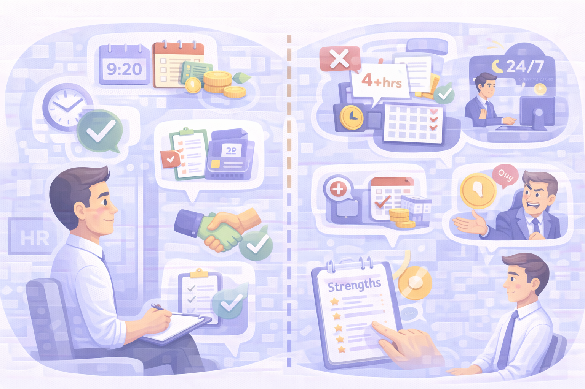

Співбесіда: як підготуватись
Співбесіда — це не екзамен, а діалог. Ти не просиш роботу — ти вибираєш, чи підходить компанія саме тобі.
Як поводитись на співбесіді
Спокійна і структурована подача допомагає скласти правильне враження.
- Відповідати спокійно й коротко.
- Якщо чогось не знаєш — чесно сказати: «не працював з цим, але можу швидко навчитись».
- Підготувати наперед приклади: складна ситуація, яку ти вирішив; найбільший успіх; робота в команді.
- Надсилати по 5–10 заявок щодня, не фокусуватись на одній компанії.
- Під кожну вакансію трохи адаптувати резюме — це реально підвищує шанс відповіді.
Як не хвилюватися
Хвилювання — нормальне. Але його можна зменшити.
- Памʼятай: співбесіда — це перевірка взаємовідповідності.
- Ти не просиш — ти вибираєш.
- Налаштуйся, що ти теж оцінюєш компанію, а не лише вони тебе.
- За день до розмови повтори коротко свої сильні сторони.

Що питати роботодавця
Питання — це ознака зрілості та розуміння процесів.
Добре, якщо компанія пропонує:
- Чіткий графік.
- Регулярні виплати.
- Прозорі обов’язки.
- Легальне оформлення.
- Тестове завдання невелике — до 1 години.
Погані сигнали:
- Просять зробити тестове на 4+ години без оплати.
- Говорять «у нас ненормований день» або «всі все роблять».
- Є затримки зарплати.
- Очікують реагування 24/7.
- HR використовує маніпуляції або тиск.